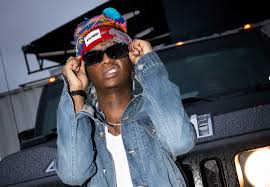
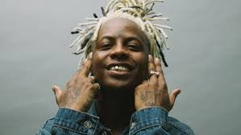
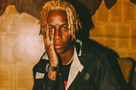
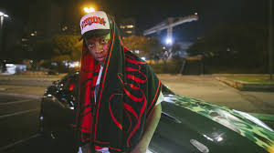

Yunk Vino, nascido Marcos Vinícius Albano, cresceu em Carapicuíba (SP) e deu seus primeiros passos na música em 2018, de forma independente. Com uma abordagem melódica e autêntica, chamou atenção desde os primeiros lançamentos.
O ponto de virada veio em 2019, quando abriu um show do Racionais MC’s — uma oportunidade que marcou sua entrada definitiva no cenário. Em 2020, firmou parceria com a Labbel Records, selo ligado à Boogie Naipe, o que deu base para uma evolução artística ainda mais sólida.
Desde então, se destacou como um dos principais nomes da nova geração do trap nacional — trazendo originalidade, estética e consistência a cada projeto.
>Yunk Vino trata cada projeto como uma experiência. Não lança apenas músicas: cria atmosferas. Em 2020, veio a primeira grande virada com a mixtape “237”, que mais tarde ganhou uma versão deluxe. A obra mesclava letras introspectivas, beats melódicos e uma estética urbana refinada.
Depois vieram projetos como “Midnight Calls” e a série “Meu Amigo Diário (M.A.D 1 e 2)”, lançados entre 2023 e 2024. Nessas mixtapes, Vino se mostra mais versátil e maduro, explorando novas referências sonoras como afrobeat e new jazz, mas sem perder a base do trap.
Cada lançamento mostra um artista que evolui sem abandonar suas raízes — e que respeita a arte como processo, não fórmula.
O que torna Yunk Vino único vai além da música. Sua identidade visual é marcante e coerente com seu som: urbana, moderna e elegante. Ele transita entre o streetwear e a moda de luxo com naturalidade — usando marcas como Balenciaga, Supreme e UMS 458 não como ostentação, mas como parte da narrativa.
Essa presença estética aparece em clipes, redes sociais, shows e até nas letras. A forma como ele se expressa visualmente completa a experiência sonora, tornando cada lançamento um capítulo dentro de um universo próprio.
A trajetória de Yunk Vino mostra que consistência e originalidade abrem portas. Em 2022, ele se apresentou no Palco Supernova do Rock in Rio, um dos maiores festivais do mundo. Em 2024, levou seu som para Paris durante a Fashion Week, como parte do evento “Je M’appelle Brasil”.
Essas participações comprovam que o trap brasileiro — com conteúdo, conceito e arte — pode ocupar espaços globais. E Yunk Vino é uma das vozes mais potentes dessa geração.
Ao longo da carreira, Vino construiu parcerias que ajudaram a fortalecer a cena. Entre os nomes com quem já colaborou estão MC Igu, Matuê, Teto, Xamã, Clara Lima, Tasha & Tracie, Derek e Edi Rock.
Também participou da Tropa do Bruxo, projeto idealizado por Ronaldinho Gaúchob, onde dividiu faixas com Young Mascka e Dalua. Essas conexões refletem o respeito que ele conquistou, tanto do público quanto de outros grandes artistas.
Yunk Vino não apenas acompanha a cena — ele ajuda a moldá-la. Com letras sinceras, identidade forte, visuais impactantes e projetos bem pensados, ele elevou o padrão do trap brasileiro.
Ele é o maioral porque representa o que o trap tem de mais potente: autenticidade, evolução, estética e voz própria. Enquanto muitos seguem o hype, Vino segue sua verdade — e isso é o que constrói legado.
